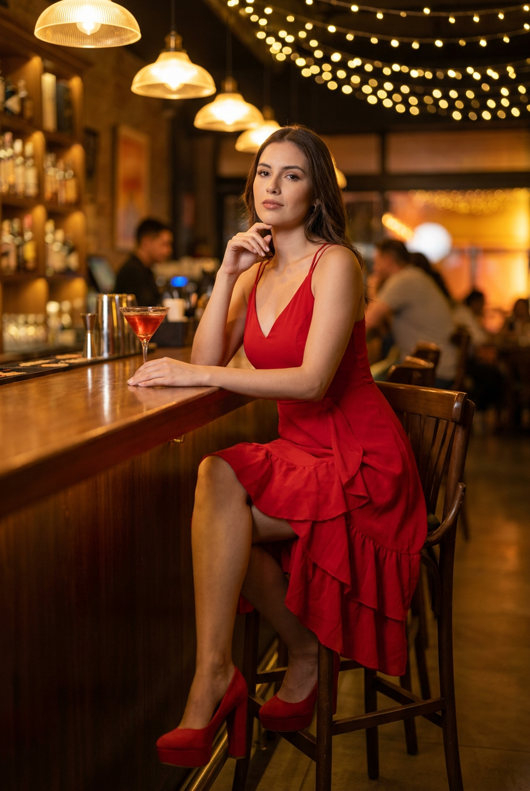
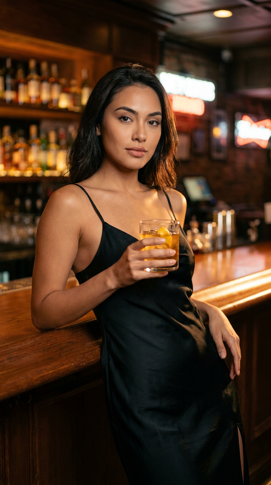
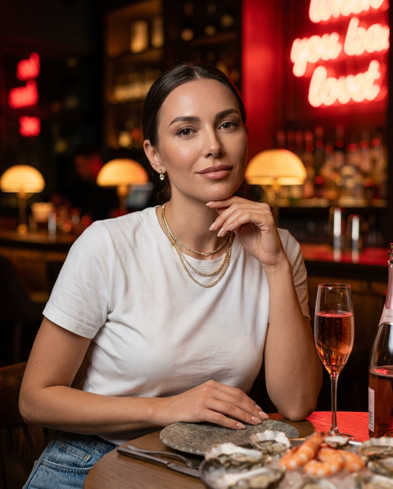
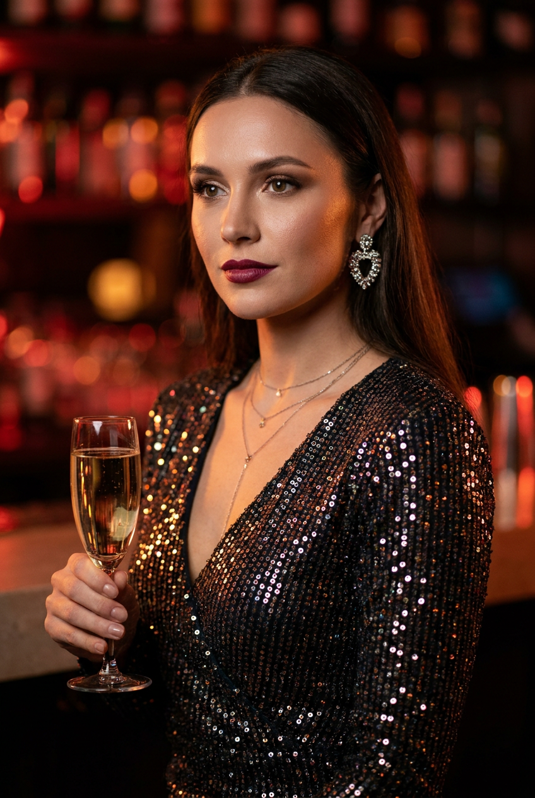
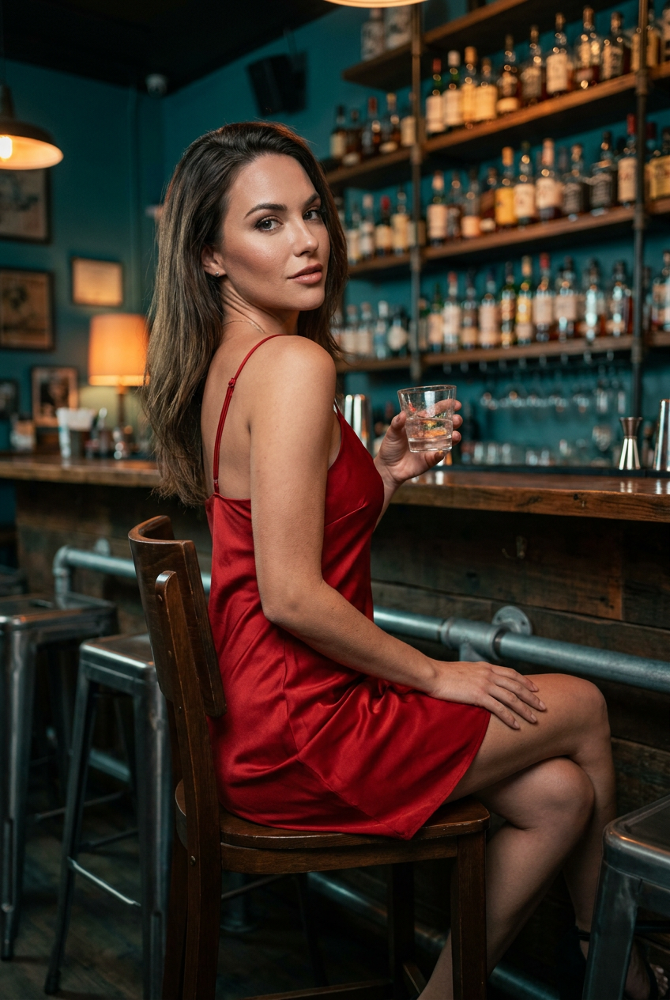
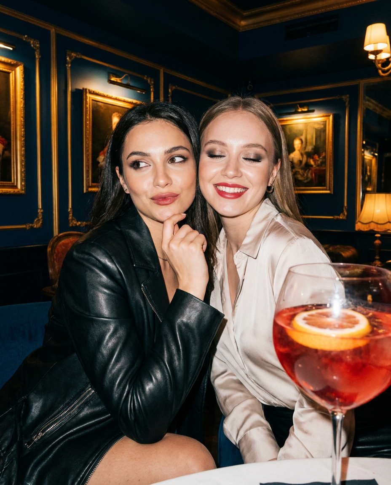
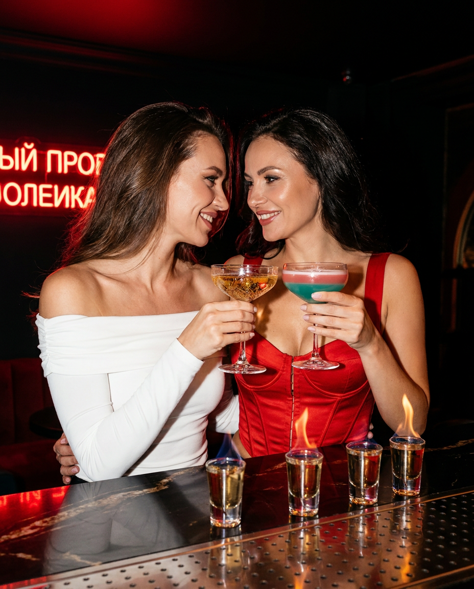
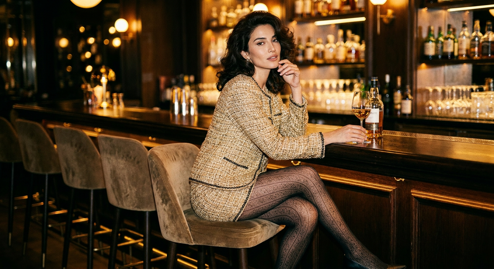
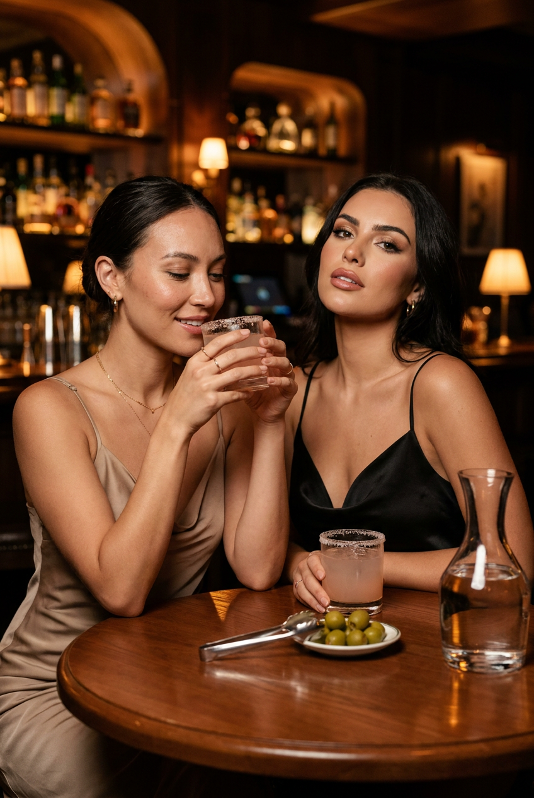
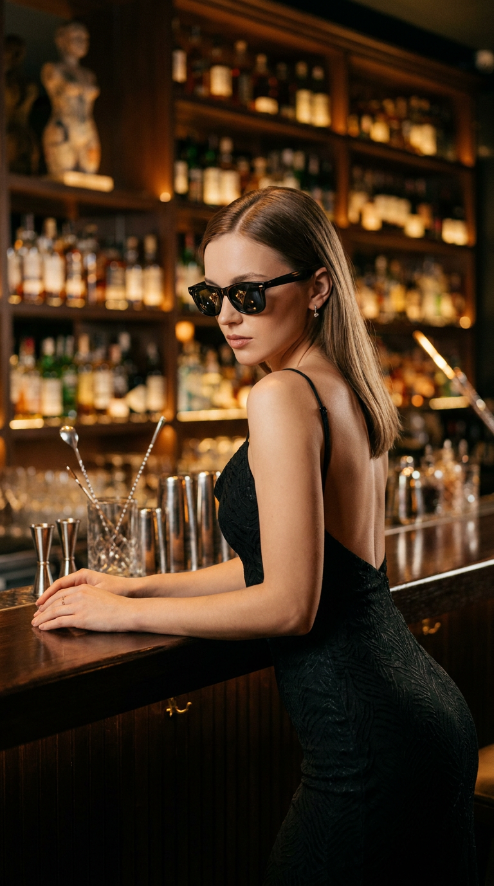

ИИ-фото в баре: 10 промптов для нейросети

Обычное селфи в баре часто теряет атмосферу: лицо выглядит чужим, руки ломаются, бокал расплывается, а вечерний свет превращает кожу в пластик. Генерация помогает собрать нужный кадр без фотографа, сложного образа и десятков дублей.
В подборке — 10 сценариев для нейросети: от спокойного портрета у стойки до снимка с подругой, party-съёмки со вспышкой и дерзкого кадра в очках. Подставьте свой референс лица, выберите формат и уточните детали позы, одежды и света.
Как сгенерировать такое фото: пошагово
Нужен снимок анфас при ровном свете, лицо в кадре целиком, без тёмных очков и головных уборов. Разрешение от 1000 пикселей по короткой стороне. Чем чётче исходник, тем точнее модель повторит черты.
Выберите сценарий ниже и нажмите «Копировать» — текст уйдёт в буфер целиком, вместе с командой сохранения внешности. Эта команда стоит первой строкой и отвечает за то, чтобы на выходе было ваше лицо, а не случайное.
Кнопка «Сгенерировать» рядом с каждым промптом открывает модель в новой вкладке. Nano Banana Pro работает с референсом лица — в отличие от моделей, которые генерируют портрет с нуля и узнаваемость теряют.
Промпт — в поле ввода, портрет — через загрузку референса. Порядок значения не имеет, но без референса команда сохранения внешности работать не будет: модели нечего сохранять.
Для сторис и ленты берите 9:16, для превью и обложек — 4:3. Первый результат редко идеален: если поза или свет ушли не туда, поправьте соответствующую часть промпта и запустите заново. Обычно хватает двух-трёх итераций.
10 промптов для генерации
1. Портрет у барной стойки
Строго сохранить внешность по загруженному референсу: черты лица, пропорции, мимику и текстуру кожи без изменений. Гиперреалистичный fashion/nightlife-портрет в вертикальном формате 9:16, съёмка на объектив 85 мм, f/1.8. Девушка сидит на высоком барном стуле у стойки, корпус немного развёрнут, голова чуть повернута вверх к камере. Взгляд спокойный и уверенный, губы мягко сомкнуты. Левая рука лежит на баре рядом с коктейлем, правая поднята к лицу: пальцы легко касаются губ или подбородка. Слева стоит прозрачный коктейльный бокал с красноватым напитком, точными бликами, преломлениями и естественным уровнем жидкости. Сохранить лицо по загруженному референсу: овал, глаза, нос, губы, тон кожи и мимику. Макияж вечерний, но натуральный: ровная кожа, выразительные глаза, аккуратные брови, нюдово-розовые губы. Тёплый барный свет, мягкое боке, натуральная текстура кожи, без лишних пальцев и искажений стекла.
2. Уверенный взгляд со стойки

Строго сохранить внешность по загруженному референсу: черты лица, пропорции, мимику и текстуру кожи без изменений. Вертикальная гиперреалистичная fashion-фотография в формате 9:16, композиция повторяет референс. Девушка стоит у барной стойки, слегка подаётся вперёд и смотрит прямо в объектив с ровным, уверенным выражением. Одна рука лежит на верхней кромке стойки справа, вторая держит в центре кадра бокал с напитком. Лицо должно точно соответствовать загруженному фото: сохранить форму лица, разрез глаз, нос, губы, брови, оттенок кожи и мимику. На девушке чёрное облегающее платье-комбинация на тонких бретелях; ткань выглядит настоящей и ловит множество мелких бликов от барного освещения. Макияж вечерний, но сдержанный: гладкий тон без эффекта маски, подчёркнутые брови, аккуратная растушёвка глаз, лёгкий хайлайт, нюдово-розовые губы. Небольшие серьги дают тонкий металлический блеск. Реалистичные руки, пальцы и бокал, мягкий фон с огнями, малая глубина резкости.
3. Спокойный кадр за столом

Строго сохранить внешность по загруженному референсу: черты лица, пропорции, мимику и текстуру кожи без изменений. Фотореалистичный nightlife-портрет в вертикальном формате 4:5 или 9:16, камера на уровне лица, объектив 50 мм, f/2.0. Девушка сидит за столом в баре и смотрит прямо в объектив; голова слегка отклонена в сторону, на лице спокойная уверенная полуулыбка. Одно предплечье опирается на стол, согнутая рука поддерживает подбородок, пальцы аккуратно расположены возле губ. Вторая рука лежит рядом с тарелкой или краем стола, ногти короткие и ухоженные, нюдового оттенка. Сохранить узнаваемость по референсу лица: овал, глаза и цвет радужки, нос, губы, брови, кожу и мимику. Макияж вечерний, реалистичный: ровный тон, выразительные глаза, естественно-розовые нюдовые губы с лёгким блеском. Одежда — белая футболка и джинсы mom. Тёплые лампы бара, мягкие тени, натуральные поры кожи, аккуратная тарелка и спокойный интерьер без лишнего визуального шума.
4. Бордовый блеск ночи

Строго сохранить внешность по загруженному референсу: черты лица, пропорции, мимику и текстуру кожи без изменений. Кинематографичный вертикальный nightlife-портрет в баре, съёмка на 85 мм при f/1.8, с мягким боке и контрастным светом. Девушка показана в лёгком полупрофиле и смотрит в сторону, выражение спокойное, собранное и уверенное. Лицо сохранить по загруженному референсу: форма, глаза, нос, губы, брови, оттенок кожи, мимика и индивидуальные черты без эффекта чужого человека. Макияж выразительный: длинные ресницы, аккуратная стрелка, ровная кожа с видимой естественной текстурой, лёгкий хайлайт на скулах, насыщенные красно-бордовые губы. На ней роскошное платье с V-вырезом из тёмной ткани, полностью покрытое мелкими пайетками. Каждая пайетка выглядит объёмной и даёт отдельное реалистичное отражение барных огней, без пластиковой заливки. Крупные серьги блестят как металл, на шее видны тонкие цепочки или светящиеся детали. Глубокий тёмный фон, локальные огни, дорогая editorial-атмосфера.
5. Красное платье через плечо

Строго сохранить внешность по загруженному референсу: черты лица, пропорции, мимику и текстуру кожи без изменений. Гиперреалистичное вертикальное fashion/nightlife-фото в баре, портретный объектив 85 мм, диафрагма f/2.0. Девушка сидит на высоком барном табурете, корпус развёрнут влево, а голову она поворачивает через плечо к камере. Взгляд уверенный, эмоция сдержанная. Лицо и макияж должны совпадать с загруженным референсом: сохранить овал, глаза, нос, губы, тон кожи, мимику и узнаваемость; кожа имеет естественную micro-texture и мягкие тени под скулами. На девушке красное атласное платье на тонких бретелях, ткань отражает свет гладкими, но не пересвеченными бликами. Левая рука держит маленький бокал или стакан с прозрачным напитком, в стекле видны корректные отражения и лёгкий градиент жидкости. Правая рука естественно лежит на бедре или сиденье. Пальцы анатомически правильные. На губах яркая красная помада, глаза оформлены в вечернем стиле. Барный фон повторяет референс: тёмный интерьер, локальные огни, мягкое боке и ощущение дорогой ночной съёмки.
6. Подруги со вспышкой

Строго сохранить внешность по загруженному референсу: черты лица, пропорции, мимику и текстуру кожи без изменений. Фотореалистичный вертикальный candid-снимок двух взрослых подруг в тёмном элегантном баре или ресторане. Камера фиксирует момент прямой вспышкой: лица и передний план слегка подсвечены, на фоне остаются глубокие тени и размытые огни. Девушки сидят очень близко за столом и выглядят как лучшие подруги на вечернем выходе. Одна слегка подаётся вперёд и касается подбородка пальцами, её взгляд уходит в сторону; выражение игривое, спокойное и немного загадочное. Вторая смотрит в камеру с живой, дружелюбной эмоцией. Если загружены два референса, левая девушка получает первое лицо, правая — второе. Не смешивать черты: отдельно сохранить форму лица, глаза, брови, нос, губы, скулы, подбородок, линию волос, тон кожи, возрастные особенности и узнаваемость каждой. Естественные руки, корректные пальцы, реалистичная кожа, вечерняя одежда и небольшие блики на бокалах. Формат 4:5 или 9:16, ощущение случайно пойманного кадра.
7. Тёплый кадр у стойки

Строго сохранить внешность по загруженному референсу: черты лица, пропорции, мимику и текстуру кожи без изменений. Вертикальная фотореалистичная party-editorial съёмка двух взрослых подруг в стильном баре или ночном лаунже. Они сидят либо стоят очень близко у барной стойки, как на тёплом вечернем выходе, и смотрят друг на друга с естественными улыбками. Левая девушка немного повёрнута к правой, между ними ощущаются доверие, дружелюбие и лёгкая игривость. Первое загруженное лицо использовать для девушки слева, второе — для девушки справа; сохранить каждую личность отдельно, не смешивать черты и не обобщать лица. Точно передать овал, глаза, брови, нос, губы, скулы, подбородок, линию роста волос, тон кожи и возрастные особенности. Свет дорогой nightlife-съёмки: тёплые лампы, мягкие отражения на стойке, размытые огни на фоне, лёгкий контраст и чистая детализация. Одежда вечерняя, стильная, но естественная; позы расслабленные, руки и пальцы анатомически корректные. Съёмка на 50 мм, f/2.0, без лишних людей и деформаций.
8. Old-money в лаунже

Строго сохранить внешность по загруженному референсу: черты лица, пропорции, мимику и текстуру кожи без изменений. Фотореалистичная fashion-editorial фотография взрослой девушки в роскошном баре или lounge-интерьере дорогого отеля. Вертикальный кадр, объектив 50 мм, f/2.0, мягкое боке, тёплая палитра дерева и приглушённых золотистых огней. Девушка сидит боком на барном стуле у деревянной стойки, корпус слегка развёрнут. Одна рука небрежно лежит на спинке стула или баре, вторая касается лица либо подбородка. Одна нога согнута и приподнята, другая вытянута вдоль сиденья или опущена вниз; поза расслабленная, элегантная и уверенная. Взгляд направлен в сторону, выражение загадочное, с лёгкой дерзостью и fashion attitude. Лицо максимально соответствует загруженному референсу: сохранить форму глаз, носа, губ, овал, мимику и индивидуальность. На девушке роскошный вечерний образ с дорогой фактурой ткани и аккуратными аксессуарами, без чрезмерной театральности. Атмосфера old-money glamour, чистая анатомия, натуральная кожа, реалистичные материалы и журнальная цветокоррекция.
9. Две подруги за столом

Строго сохранить внешность по загруженному референсу: черты лица, пропорции, мимику и текстуру кожи без изменений. Гиперреалистичное вертикальное фото в баре, камера находится на уровне груди и лица, формат 9:16, объектив 50 мм, f/2.0. Две девушки сидят за деревянным столом. Лица строго разделены по референсам: девушка слева получает первое загруженное лицо, девушка справа — лицо подруги со второго изображения. Сохранить для обеих форму лица, глаза, брови, нос, губы, тон кожи, мимику и узнаваемость, не смешивать личности. Правая девушка смотрит прямо в камеру, подбородок немного поднят, губы слегка сомкнуты, выражение уверенное. Левая повернулась вправо, держит бокал одной или двумя руками возле губ, глаза полуприкрыты или опущены, на лице лёгкая улыбка. В центре кадра остаётся стол с естественными отражениями дерева, бокалами и небольшими деталями вечерней сервировки. Свет мягкий, барный, с размытыми огнями на фоне; ощущение расслабленного момента, который случайно сняли между разговорами. У рук правильные пропорции, стекло не искажено, лица не перекрыты.
10. Очки и диагональный кадр

Строго сохранить внешность по загруженному референсу: черты лица, пропорции, мимику и текстуру кожи без изменений. Гиперреалистичное fashion/nightlife-фото в вертикальном формате 9:16 с динамичной диагональной композицией. Камера слегка наклонена, перспектива напоминает широкоугольную съёмку 28 мм, но лицо и тело остаются без деформаций. Девушка показана в профиль или в развороте 3/4, смотрит в сторону, голова немного опущена, выражение спокойное и уверенное. Сохранить индивидуальность по загруженному фото: форму лица, глаза, нос, губы, брови, тон кожи и мимику. На лице чёрные солнцезащитные очки классической формы; тёмные линзы отражают огни бара, но не скрывают естественную геометрию лица. Волосы гладкие, шелковистые, с пробором ближе к центру, пряди уложены живо, без пластикового блеска. Одежда — чёрный вечерний сарафан или платье на тонких бретелях, с открытой спиной и глубоким вырезом. Макияж аккуратный, кожа с натуральной текстурой, губы матовые или сатиновые. Барный интерьер, световые полосы, глубокие тени и лёгкое размытие движения.
Что важно учесть в этом стиле
Барный кадр держится на сочетании тёплых источников света, глубокого фона и одного-двух заметных акцентов: бокала, пайеток, красной помады или вспышки. Если описать только одежду, нейросеть часто делает ровный студийный портрет вместо ночной сцены.
Для сохранения внешности прикладывайте чёткий референс без сильных фильтров. В промпте отдельно фиксируйте положение головы, рук и бокала. Для вертикального поста подойдут 9:16, 4:5 — для ленты, а объектив 50–85 мм поможет получить естественные пропорции лица.
Идеи для вариаций
- Заменить красный коктейль на бокал шампанского с тонкими пузырьками.
- Перенести сцену из тёмного лаунжа на открытую террасу с ночным городом.
- Добавить прямую вспышку, эффект плёночного зерна и лёгкое смазывание движения.
- Сделать серию в одной локации: портрет у стойки, кадр за столом и снимок через зеркало.
- Поменять вечернее платье на кожаный жакет, белую рубашку или мерцающий топ.
Как собрать свой промпт
Начните с формата и типа съёмки: вертикальный портрет, candid со вспышкой или журнальный editorial. Затем задайте локацию, позу, направление взгляда, положение рук и главный предмет в кадре. После этого опишите лицо по референсу, одежду, макияж и материалы — стекло, атлас, металл или пайетки.
В конце добавьте технические параметры: объектив 50 или 85 мм, диафрагму f/1.8–2.8, мягкое боке, разрешение не ниже 2048 пикселей по длинной стороне. Сгенерируйте 4–8 вариантов, а затем уточните только проблемную деталь: пальцы, бокал, очки или направление света.
Ошибки, из-за которых кадр не получается
- Слишком много задач в одном абзаце. Разделяйте сцену, позу, внешность, одежду и свет.
- Нет указания на формат. Без 9:16 или 4:5 композиция может уйти в квадратный портрет.
- Референсы двух лиц не подписаны. Пишите, кто находится слева, а кто справа.
- Общие слова вместо материалов. «Красивое платье» слабее, чем «красный атлас с мягкими бликами».
- Слишком сильный wide-angle. Широкий угол искажает руки и лицо, поэтому для портрета лучше 50–85 мм.
- Нет проверки анатомии. Перед публикацией увеличьте руки, пальцы, бокал и украшения на 100%.
Частые вопросы
Как сделать такое ИИ-фото бесплатно?
Попробуйте Kandinsky или Шедеврум: они подходят для генерации сцен по тексту, но точное сохранение лица по референсу может быть ограниченным. В Krea AI и Arena.ai обычно удобнее тестировать изображения и стили, однако доступность загрузки лица, число попыток и качество результата меняются. Для бесплатного варианта рассчитывайте на несколько итераций и будьте готовы вручную уточнять промпт.
Почему нейросеть меняет лицо на каждом варианте?
Референс не всегда работает как жёсткая фиксация личности. Используйте одно чёткое фото анфас, не меняйте описание внешности между попытками и добавляйте формулировку о сохранении формы лица, глаз, носа, губ и мимики. Для серии кадров закрепите один seed, если сервис это поддерживает.
Как получить реалистичные руки и бокалы?
Опишите положение каждой руки отдельно и укажите число видимых пальцев, естественные пропорции и правильные соединения. Для бокала задайте материал, уровень жидкости, блики и преломления. Если первая генерация неудачна, лучше исправлять один объект за раз через перегенерацию области.
Какой формат выбрать для фото из бара?
9:16 подходит для сторис и вертикальных публикаций с фигурой в полный рост. Формат 4:5 удобнее для ленты, если в кадре портрет и часть интерьера. Для снимка двух людей за столом выбирайте 4:5 или 3:4, чтобы оставить место рукам, бокалам и барному фону.